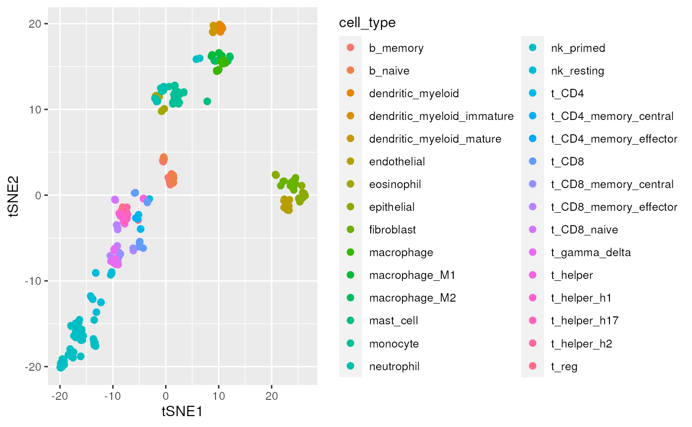
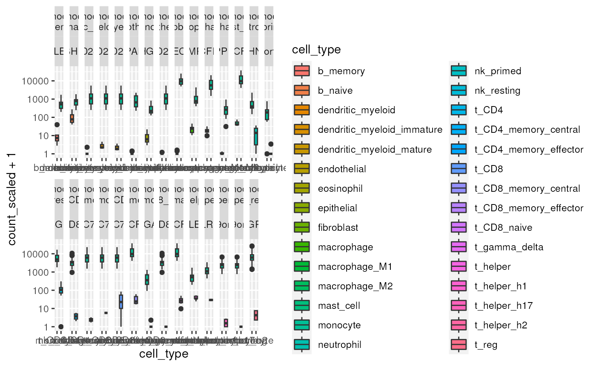

Manuscript code - transcriptional signature identification
Stefano Mangiola
2023-03-04
Source:vignettes/manuscript_transcriptional_signatures.Rmd
manuscript_transcriptional_signatures.RmdThis document includes the code used for the manuscript, for the transcriptional signature identification.
counts_scaled =
counts_cell_type %>%
# Convert to tidybulk tibble
tidybulk(sample, symbol, count) %>%
# Preprocess and scale the data
aggregate_duplicates() %>%
identify_abundant() %>%
scale_abundance() %>%
# Impute missing sample-transcript pairs
impute_missing_abundance(~cell_type) %>%
mutate(.abundant = TRUE)
counts_non_red =
counts_scaled %>%
# Perform operation for each cell type
nest(data = -cell_type) %>%
mutate(data = map(
data,
~ .x %>%
remove_redundancy(
method="correlation",
correlation_threshold = 0.99,
top=1000
)
)) %>%
unnest(data)
# Select genes that are in at least one sample for all cell types
gene_all =
counts_non_red %>%
distinct(symbol, cell_type) %>%
count(symbol) %>%
filter(n == max(n))
# filter dataset and impute missing transcripts-samples pairs
counts_non_red_common =
counts_non_red %>%
inner_join(gene_all)
counts_non_red_common %>%
reduce_dimensions(method = "tSNE", action="get") %>%
ggplot(aes(x = `tSNE1`, y = `tSNE2`, color = cell_type)) +
geom_point(size =2)
markers =
# Define all-versus-all cell type permutations
counts_non_red_common %>%
distinct(cell_type) %>%
pull(cell_type) %>%
gtools::permutations(n = length(.), r = 2, v = .) %>%
as_tibble() %>%
setNames(c("cell_type1", "cell_type2")) %>%
mutate(contrast = sprintf("cell_type%s - cell_type%s", cell_type1, cell_type2)) %>%
# Rank marker genes
mutate(de =
pmap(
list(cell_type1, cell_type2, contrast),
~ counts_non_red_common %>%
filter(cell_type %in% c(..1, ..2)) %>%
test_differential_abundance(~ 0 + cell_type, .contrasts = ..3, fill_missing_values = TRUE, action="get", omit_contrast_in_colnames = T) %>%
filter(logFC > 0) %>%
arrange(FDR) %>%
rowid_to_column(var = "i")
)) %>%
unnest(de)
markers %>%
# Filter best markers for monocytes
filter(cell_type1=="monocyte" & i==1) %>%
# Prettify contrasts for plotting
unite(pair, c("cell_type1", "cell_type2"), remove = FALSE, sep = "\n") %>%
# Reshape
gather(which, cell_type, cell_type1, cell_type2) %>%
distinct(pair, symbol, which, cell_type) %>%
# Attach counts
left_join(counts_non_red) %>%
# Plot
ggplot(aes(y = count_scaled + 1, x = cell_type, fill = cell_type)) +
geom_boxplot() +
facet_wrap(~pair+ symbol, scales ="free_x", nrow = 2) +
scale_y_log10()
markers %>%
# Select first 5 markers from each cell-type pair
filter(i <= 5) %>%
unite(pair, c("cell_type1", "cell_type2"), remove = FALSE, sep = "\n") %>%
# Reshape
gather(which, cell_type, cell_type1, cell_type2) %>%
distinct(symbol) %>%
# Attach counts
left_join(counts_non_red, by = c("symbol")) %>%
# Plot
reduce_dimensions(sample, symbol, count_scaled, method = "tSNE", action="get") %>%
pivot_sample(sample) %>%
ggplot(aes(x = `tSNE1`, y = `tSNE2`, color = cell_type)) +
geom_point(size =2)